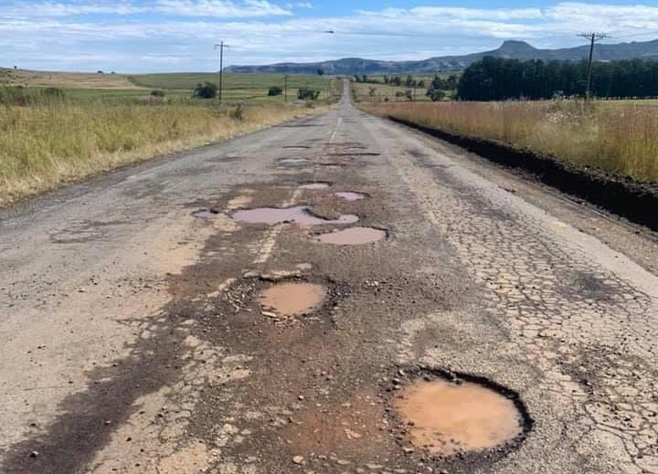
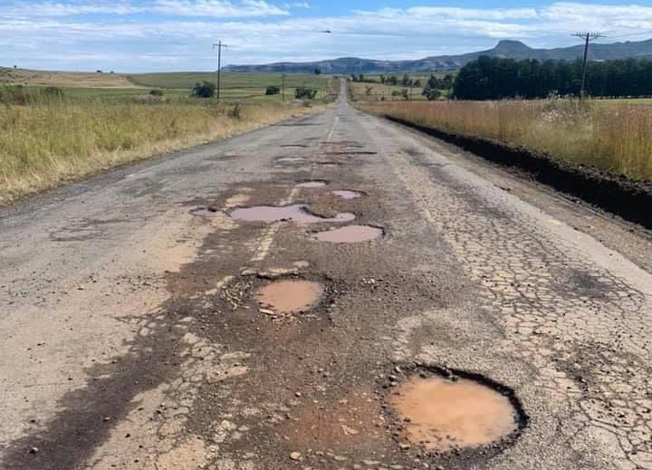

Final Project Ideas
The Pothole ProbeIn my home country, Zimbabwe, potholes are a huge issue and the roads are sometimes undriveable due to the amount and/or sizes of potholes. The issue is enhanced by lack of government support and efficiency to solve the pothole problem leading to many dangerous roads in the country. The presence of potholes can cause burst or flat tires, dangerous roads in rainy/slippery conditions as well as increases travel time for those using those roads. The Pothole Probe is an idea I have of a robot with pothole detecting sensors that moves up and down a road/path and attempts to fill the pothole with tar once it reaches that area.
 

For this project, I would be building a model of The Pothole Probe that simulates the intentions of the actual robot. The model would move along a pre-defined path in the x-y plane which would simulate moving up or down a road. Sensors would be attached at various locations on the robot that can detect differences in depth on a surface or something similar in order to detect the holes and crevices as the robot moves along. I thought of the sensors on a roomba vacuum since these vacuums know not to fall off edges. Essentially, the robot would stop right before the hole. Then, I would also need a filling system once the location of the pothole has been detected. This could be modelled as dropping some material into the holes. The robot would be Arduino-controlled, and I would use many tools learnt in the duration of the course to make it such as: 3D printing, laser cutting, electronics (motors and sensors), etc.
Turns out a similar variation of the project has been done before. Here is the link to it.